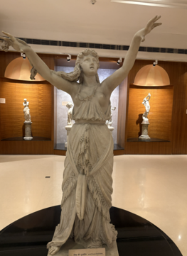

Audio Explanation
Egyptian Priestess (Allegorical Figure)

মিশরীয় পুরোহিত (রূপক চিত্র) (XLV - 18) * মার্বেল পাথরের তৈরি এই ভাস্কর্যটিতে একজন নারীকে মিশরীয় পুরোহিত-নারীর রূপে ফুটিয়ে তোলা হয়েছে। তিনি শান্তভাবে দাঁড়িয়ে আছেন এবং তাঁর হাত দুটি ওপরের দিকে তোলা। এই ভঙ্গিটি ইঙ্গিত দেয় যে তিনি হয়তো প্রার্থনা করছেন কিংবা দেবতাদের উদ্দেশ্যে কোনো কিছু নিবেদন করছেন। তাঁর শান্ত মুখাবয়বে ভক্তি ও শ্রদ্ধার ভাব ফুটে উঠেছে। তাঁর গলায় রয়েছে একটি দ্বৈত হার, যার সাথে যুক্ত আছে ডানাযুক্ত মিশরীয় মস্তক-আকৃতির একটি লকেট। মিশরীয় বিশ্বাস অনুযায়ী, এই প্রতীকটি সুরক্ষা, ঐশ্বরিক শক্তি এবং আধ্যাত্মিকতার প্রতিনিধিত্ব করে। ভাস্কর্যটির মসৃণ গড়ন, সুষম ভঙ্গি এবং মার্বেল পাথরের নিখুঁত কাজ—সবকিছুই গ্রিক ও রোমান ভাস্কর্য-শৈলী দ্বারা অনুপ্রাণিত ইউরোপীয় ধ্রুপদী শিল্পরীতির অনুসারী। ঊনবিংশ শতাব্দীতে ইউরোপীয় শিল্পকলায় প্রাচীন মিশরের প্রভাব কীভাবে পড়েছিল, এই ভাস্কর্যটি তার একটি চমৎকার উদাহরণ।
Egyptian Priestess (Allegorical Figure)
मिस्री पुजारिन (रूपकात्मक आकृति) (XLV - 18) * यह संगमरमर की प्रतिमा एक ऐसी महिला को दर्शाती है, जिसकी कल्पना एक मिस्री पुजारिन के रूप में की गई है। वह शांत भाव से खड़ी है और उसके दोनों हाथ ऊपर उठे हुए हैं। यह मुद्रा संकेत देती है कि वह संभवतः प्रार्थना कर रही है या देवताओं को कोई अर्पण प्रस्तुत कर रही है। उसके चेहरे पर शांति और गंभीरता दिखाई देती है, जो उसकी भक्ति और श्रद्धा को दर्शाती है। उसने दोहरी माला पहन रखी है, जिसके मध्य में पंखों वाले मिस्री मुख का लटकन है। मिस्री मान्यताओं में यह प्रतीक सुरक्षा, दैवी शक्ति और आध्यात्मिकता का प्रतिनिधित्व करता है। प्रतिमा का सुडौल शरीर, संतुलित मुद्रा और संगमरमर की बारीक एवं चिकनी सतह यूरोपीय शास्त्रीय कला की शैली को दर्शाती है, जो यूनानी और रोमन मूर्तिकला से प्रेरित थी। यह प्रतिमा इस बात का उत्कृष्ट उदाहरण है कि 19वीं शताब्दी में प्राचीन मिस्र की कला और संस्कृति ने यूरोपीय कला को किस प्रकार प्रभावित किया।
Egyptian Priestess (Allegorical Figure)
ಈಜಿಪ್ಟಿನ ಪುರೋಹಿತೆ (ಸಾಂಕೇತಿಕ ಚಿತ್ರ) (XLV-18) * ಈ ಮಾರ್ಬಲ್ (ಅಮೃತಶಿಲೆ) ಶಿಲ್ಪ ಕಲಾಕೃತಿಯು ಈಜಿಪ್ಟಿನ ಪೂಜಾರಿಣಿ ಎಂದು ಕಲ್ಪಿಸಲಾದ ಮಹಿಳೆಯನ್ನು ತೋರಿಸುತ್ತದೆ. ಆಕೆಯು ತನ್ನ ಕೈಗಳನ್ನು ಎತ್ತಿ ಪ್ರಶಾಂತವಾಗಿ ನಿಂತಿದ್ದಾಳೆ. ಈ ಭಂಗಿಯು ಆಕೆಯು ಪ್ರಾರ್ಥಿಸುತ್ತಿದ್ದಾಳೆ ಅಥವಾ ದೇವತೆಗಳಿಗೆ ಏನನ್ನಾದರೂ ಅರ್ಪಿಸುತ್ತಿದ್ದಾಳೆ ಎಂಬುದನ್ನು ಸೂಚಿಸುತ್ತದೆ. ಆಕೆಯ ಮುಖವು ಪ್ರಶಾಂತವಾಗಿ ಕಾಣುತ್ತಿದ್ದು, ಭಕ್ತಿ ಮತ್ತು ಗೌರವವನ್ನು ತೋರಿಸುತ್ತದೆ. ಆಕೆಯು ರೆಕ್ಕೆಗಳಿರುವ ಈಜಿಪ್ಟಿಯನ್ ತಲೆಯ ಪೆಂಡೆಂಟ್ ಇರುವ ಇಮ್ಮಡಿ ಮಾಲೆಯನ್ನು ಧರಿಸಿದ್ದಾಳೆ. ಈಜಿಪ್ಟಿನ ನಂಬಿಕೆಯಲ್ಲಿ, ಈ ಸಂಕೇತವು ರಕ್ಷಣೆ, ದೈವಿಕ ಶಕ್ತಿ ಮತ್ತು ಆಧ್ಯಾತ್ಮಿಕತೆಯನ್ನು ಪ್ರತಿನಿಧಿಸುತ್ತದೆ. ಮೃದುವಾದ ದೇಹ, ಸಮತೋಲಿತ ಭಂಗಿ ಮತ್ತು ಸೂಕ್ಷ್ಮವಾದ ಅಮೃತಶಿಲೆಯ ವಿನ್ಯಾಸವು ಗ್ರೀಕ್ ಮತ್ತು ರೋಮನ್ ಶಿಲ್ಪಕಲೆಯಿಂದ ಪ್ರೇರಿತವಾದ ಯುರೋಪಿಯನ್ ಶಾಸ್ತ್ರೀಯ ಕಲಾ ಶೈಲಿಗಳನ್ನು ಅನುಸರಿಸುತ್ತದೆ. ಈ ಪ್ರತಿಮೆಯು 19ನೇ ಶತಮಾನದಲ್ಲಿ ಪ್ರಾಚೀನ ಈಜಿಪ್ಟ್ ಹೇಗೆ ಯುರೋಪಿಯನ್ ಕಲೆಯ ಮೇಲೆ ಪ್ರಭಾವ ಬೀರಿತು ಎಂಬುದಕ್ಕೆ ಉತ್ತಮ ಉದಾಹರಣೆಯಾಗಿದೆ.
Egyptian Priestess (Allegorical Figure)
ഈജിപ്ഷ്യൻ പുരോഹിത (ആലഗോറിക്കൽ ചിത്രം) (XLV-18) * ഈജിപ്ഷ്യൻ പുരോഹിതയായി സങ്കൽപ്പിക്കപ്പെട്ട ഒരു സ്ത്രീയെ ഈ മാർബിൾ പ്രതിമ കാണിക്കുന്നു. കൈകൾ ഉയർത്തി അവൾ ശാന്തതയോടെ നിൽക്കുന്നു. ഈ ഭാവം അവൾ പ്രാർത്ഥിക്കുകയോ അതോ ദൈവങ്ങൾക്ക് എന്തെങ്കിലും സമർപ്പിക്കുകയോ ചെയ്യുന്നത് പോലെ സൂചിപ്പിക്കുന്നു. അവളുടെ മുഖത്ത് ഭക്തിയും ആദരവും പ്രകടമാക്കുന്ന ശാന്തത കാണാം. അവൾ ചിറകുകളുള്ള ഒരു ഈജിപ്ഷ്യൻ തലയുടെ ലോക്കറ്റോടുകൂടിയ ഇരട്ട മാല ധരിച്ചിട്ടുണ്ട്. ഈജിപ്ഷ്യൻ വിശ്വാസത്തിൽ ഈ ചിഹ്നം സംരക്ഷണം, ദിവ്യശക്തി, ആത്മീയത എന്നിവയെ പ്രതിനിധീകരിക്കുന്നു. മിനുസമാർന്ന ശരീരപ്രകൃതി, സന്തുലിതമായ ഭാവം, മികച്ച മാർബിൾ ഫിനിഷ് എന്നിവ ഗ്രീക്ക്, റോമൻ ശില്പകലകളിൽ നിന്ന് പ്രചോദനം ഉൾക്കൊണ്ട യൂറോപ്യൻ ക്ലാസിക്കൽ കലാശൈലിയെയാണ് പിന്തുടരുന്നത്. പത്തൊൻപതാം നൂറ്റാണ്ടിലെ യൂറോപ്യൻ കലയെ പുരാതന ഈജിപ്ത് എങ്ങനെ സ്വാധീനിച്ചു എന്നതിന്റെ മികച്ച ഉദാഹരണമാണ് ഈ പ്രതിമ.
Egyptian Priestess (Allegorical Figure)
ଇଜିପ୍ଟର ପୂଜାରିଣୀ (ଆଲଗୋରିକାଲ ପ୍ରତିମା) (XLV-18) * ଆସନ୍ତୁ, ଏହି ଗାମ୍ଭୀର୍ଯ୍ୟପୂର୍ଣ୍ଣ ଶଙ୍ଖମଲମଲ୍ ମୂର୍ତ୍ତିଟି ବିଷୟରେ ଜାଣିବା। ଏହି ଭାସ୍କର୍ଯ୍ୟରେ ଜଣେ ନାରୀଙ୍କୁ ପ୍ରାଚୀନ ଇଜିପ୍ଟର ପୂଜାରିଣୀ ରୂପରେ କଳ୍ପନା କରାଯାଇଛି। ସେ ଅତ୍ୟନ୍ତ ଶାନ୍ତ ଭାବରେ ଉଭୟ ହାତକୁ ଉପରକୁ ଟେକି ଛିଡ଼ା ହୋଇଛନ୍ତି। ଏହି ଭଙ୍ଗୀଟି ଦେବତାମାନଙ୍କ ଉଦ୍ଦେଶ୍ୟରେ ପ୍ରାର୍ଥନା କିମ୍ବା କିଛି ନିବେଦନ କରୁଥିବାର ସୂଚାଉଛି। ତାଙ୍କ ମୁଖମଣ୍ଡଳରେ ଶାନ୍ତି, ଭକ୍ତି ଏବଂ ଗଭୀର ଶ୍ରଦ୍ଧାଭାବ ସ୍ପଷ୍ଟ ପ୍ରତିଫଳିତ ହେଉଛି। ଆପଣ ଯଦି ଲକ୍ଷ୍ୟ କରିବେ, ସେ ଦୁଇଧାଡ଼ିଆ ହାର ପିନ୍ଧିଛନ୍ତି, ଯେଉଁଥିରେ ଡେଣା ଥିବା ଇଜିପ୍ଟୀୟ ମୁଖମଣ୍ଡଳ ବିଶିଷ୍ଟ ଏକ ପଦକ ରହିଛି। ଇଜିପ୍ଟର ବିଶ୍ୱାସରେ ଏହି ପ୍ରତୀକଟି ସୁରକ୍ଷା, ଦୈବୀ ଶକ୍ତି ଏବଂ ଆଧ୍ୟାତ୍ମିକତାର ସୂଚକ ଅଟେ। ଏହାର ମସୃଣ କାନ୍ତି, ସନ୍ତୁଳିତ ଭଙ୍ଗୀ ଏବଂ ଶଙ୍ଖମଲମଲ୍ ପଥରର ସୂକ୍ଷ୍ମ କାରୁକାର୍ଯ୍ୟ ଗ୍ରୀକ୍ ଓ ରୋମାନ୍ ଭାସ୍କର୍ଯ୍ୟ ଦ୍ୱାରା ପ୍ରଭାବିତ ୟୁରୋପୀୟ ପ୍ରାଚୀନ କଳା ଶୈଳୀକୁ ଅନୁସରଣ କରେ। ଉନବିଂଶ ଶତାବ୍ଦୀରେ ପ୍ରାଚୀନ ଇଜିପ୍ଟର ସଂସ୍କୃତି କିପରି ୟୁରୋପୀୟ କଳାକୁ ପ୍ରଭାବିତ କରିଥିଲା, ଏହି ମୂର୍ତ୍ତିଟି ତାର ଏକ ଶ୍ରେଷ୍ଠ ଉଦାହରଣ।
Egyptian Priestess (Allegorical Figure)
எகிப்திய பெண் பாதிரி(உருவகப் படம்) (XLV-18) * இந்த பளிங்குச் சிலை, ஒரு எகிப்திய பெண் பாதிரியாக் கற்பனை செய்யப்பட்ட ஒரு பெண்ணைக் காட்டுகிறது. அவள் கைகளை உயர்த்தியபடி அமைதியாக நிற்கிறாள். இந்த நிலை, அவள் தெய்வங்களிடம் பிரார்த்தனை செய்வதையோ அல்லது ஏதேனும் ஒன்றை அர்ப்பணிப்பதையோ உணர்த்துகிறது. அவரது முகபாவம் அமைதியாகக் காணப்படுவதுடன், பக்தியையும் மரியாதையையும் வெளிப்படுத்துகிறது. அவர் இறக்கை வடிவிலான எகிப்தியத் தலை உருவப் பதக்கத்துடன் கூடிய இரட்டை மாலையை அணிந்துள்ளார். எகிப்திய நம்பிக்கையில், இவ்வடையாளம் பாதுகாப்பு, தெய்வீக ஆற்றல் மற்றும் ஆன்மிகத்தைக் குறிக்கிறது. இதன் மென்மையான உடலமைப்பு, சமச்சீரான நிலை மற்றும் நேர்த்தியான பளிங்கு வேலைப்பாடு ஆகியவை கிரேக்க மற்றும் ரோமானிய சிற்பக்கலையால் ஈர்க்கப்பட்ட ஐரோப்பிய செவ்வியல் கலைப் பாணிகளைப் பின்பற்றுகின்றன. பத்தொன்பதாம் நூற்றாண்டில் பண்டைய எகிப்து ஐரோப்பியக் கலையை எவ்வாறு பாதித்தது என்பதற்கு இந்தச் சிலை ஒரு சிறந்த எடுத்துக்காட்டாகும்.
Egyptian Priestess (Allegorical Figure)
ఈజిప్టు పూజారిణి (అల్లెగోరికల్ ఫిగర్) (XLV-18) * ఈ పాలరాతి విగ్రహం ఒక ఈజిప్టు పూజారిణి వస్త్రధారణలో ఉన్న స్త్రీని చిత్రిస్తుంది. ఆమె చేతులు పైకెత్తి ప్రశాంతంగా నిలబడి ఉంది. ఈ భంగిమ ఆమె దేవుళ్లకు ప్రార్థన చేస్తున్నట్లు లేదా ఏదైనా సమర్పిస్తున్నట్లు సూచిస్తుంది. ఆమె ముఖం ప్రశాంతంగా, భక్తి మరియు గౌరవాన్ని చూపిస్తూ ఉంది. ఆమె రెక్కలున్న ఈజిప్టు తల లాకెట్టుతో కూడిన రెండు హారాలను ధరించి ఉంది. ఈజిప్టు నమ్మకం ప్రకారం, ఈ చిహ్నం రక్షణ, దైవిక శక్తి మరియు ఆధ్యాత్మికతకు ప్రతీక. నునుపైన శరీరం, సమతుల్యమైన భంగిమ మరియు చక్కటి పాలరాతి ముగింపు, గ్రీకు మరియు రోమన్ శిల్పకళ నుండి ప్రేరణ పొందిన యూరోపియన్ సాంప్రదాయ కళా శైలులను అనుసరిస్తాయి. 19వ శతాబ్దంలో ప్రాచీన ఈజిప్ట్ యూరోపియన్ కళను ఎలా ప్రభావితం చేసిందో చెప్పడానికి ఈ విగ్రహం ఒక మంచి ఉదాహరణ.
Egyptian Priestess (Allegorical Figure)
مصری پجاری (علامتی شخصیت) (XLV-18) اس سنگ مرمر کے مجسمے میں ایک خاتون کو دکھایا گیا ہے، جسے مصری پجاری تصور کیا جاتا ہے۔ وہ ہاتھ اٹھائے پُرسکون انداز میں کھڑی ہے۔ اس انداز سے ظاہر ہوتا ہے کہ وہ دعا کر رہی ہے یا دیوتاؤں کو کچھ پیش کر رہی ہے۔ اس کا چہرہ پُرسکون ہے، جو عقیدت اور احترام کو ظاہر کرتا ہے۔ وہ پروں والی مصری علامت کے لاکٹ کے ساتھ دوہرا ہار پہنے ہوئے ہے۔ مصری عقیدے میں یہ علامت تحفظ، الہی طاقت اور روحانیت کی نمائندگی کرتی ہے۔ اس کا ہموار جسم، متوازن انداز اور سنگ مرمر کی عمدہ تراش خراش یونانی اور رومی مجسمہ سازی سے متاثر یورپی کلاسیکی فن کے انداز کی عکاسی کرتے ہیں۔ یہ مجسمہ اس بات کی ایک اچھی مثال ہے کہ انیسویں صدی میں مصر نے یورپی فن کو کس طرح متاثر کیا۔
Egyptian Priestess (Allegorical Figure)
इजिप्शियन प्रीस्टेस (रूपकात्मक आकृती) (XLV-18) * हा संगमरवरी पुतळा इजिप्शियन पूजारीणीच्या रूपात कल्पिलेली एक स्त्री दर्शवतो. ती हात वर करून शांतपणे उभी आहे. ही मुद्रा सुचवते की ती प्रार्थना करत आहे किंवा देवांना काहीतरी अर्पण करत आहे. तिचा चेहरा शांत दिसतो, जो भक्ती आणि आदर दर्शवतो. तिने पंख असलेल्या इजिप्शियन शिरोभूषण पेंडंटसह दुहेरी हार घातला आहे. इजिप्शियन मान्यतेनुसार, हे प्रतीक संरक्षण, दैवी शक्ती आणि अध्यात्माचे प्रतिनिधित्व करते. गुळगुळीत शरीर, संतुलित मुद्रा आणि उत्कृष्ट संगमरवरी फिनिश हे ग्रीक आणि रोमन शिल्पकलेपासून प्रेरित युरोपीय शास्त्रीय कला शैलींचे अनुसरण करतात. 19 व्या शतकात प्राचीन इजिप्तने युरोपीय कलेला कसे प्रभावित केले याचे हा पुतळा एक उत्तम उदाहरण आहे.
Egyptian Priestess (Allegorical Figure)
ઇજિપ્તની પાદરી (રૂપકાત્મક આકૃતિ) (XLV-18) * આ આરસપહાણની પ્રતિમા એક મહિલાને ઇજિપ્તની પાદરી તરીકે કલ્પના કરતી બતાવે છે. તે હાથ ઊંચા કરીને શાંતિથી ઊભી છે. આ મુદ્રા સૂચવે છે કે તે ભગવાનને પ્રાર્થના કરી રહી છે અથવા કંઈક અર્પણ કરી રહી હોય, તેનો ચહેરો શાંત દેખાય છે, ભક્તિ અને આદર દર્શાવે છે. તે પાંખવાળા ઇજિપ્તની હેડ પેન્ડન્ટ સાથે ડબલ ગળાનો હાર પહેરે છે. ઇજિપ્તની માન્યતામાં, આ પ્રતીક રક્ષણ, દૈવી શક્તિ અને આધ્યાત્મિકતાનું પ્રતિનિધિત્વ કરે છે. સરળ શરીર, સંતુલિત પોઝ અને ફાઇન માર્બલ ફિનિશ ગ્રીક અને રોમન શિલ્પથી પ્રેરિત યુરોપિયન શાસ્ત્રીય કલા શૈલીઓને અનુસરે છે. આ પ્રતિમા એ વાતનું સારું ઉદાહરણ છે કે 19મી સદીમાં પ્રાચીન ઇજિપ્તએ યુરોપિયન કલાને કેવી રીતે પ્રભાવિત કરી હતી.